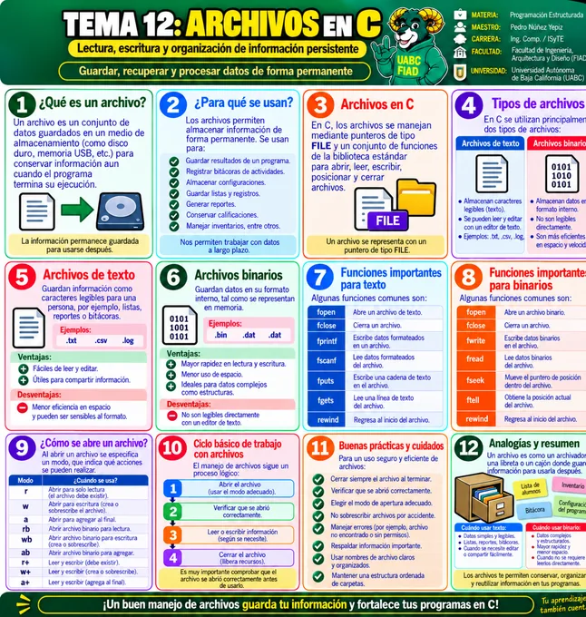
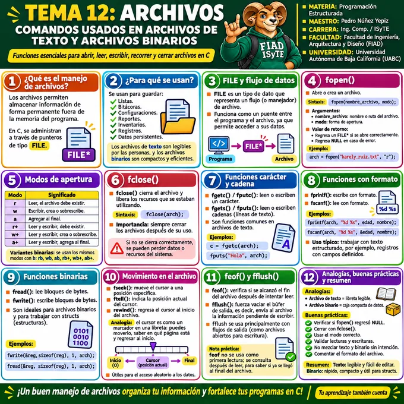
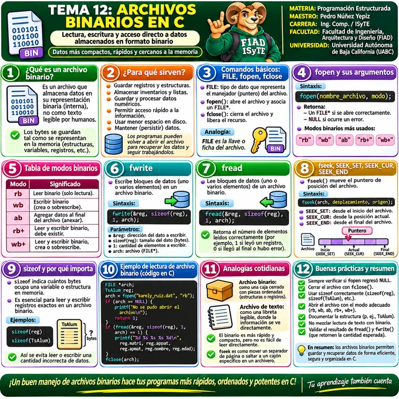
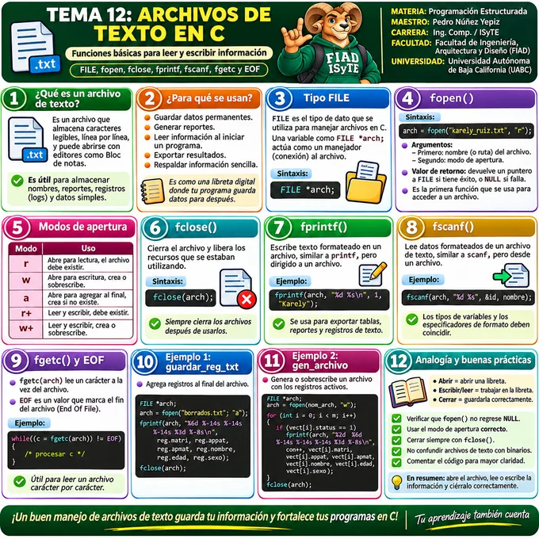

📁 Galería visual · Archivos en C
El Tema 12 se presenta en cuatro infografías complementarias: una vista general, el manejo de archivos y sus funciones principales, los archivos binarios y los archivos de texto. Selecciona cualquier imagen para abrirla en el visor y utilizar zoom.

1 · Archivos en C · Vista general
Introducción al concepto de archivo, persistencia de información, archivos de texto y binarios, funciones principales, modos de apertura, ciclo básico de trabajo y buenas prácticas.

2 · Manejo de archivos en C
Resume el uso de FILE, fopen(), fclose(), modos de apertura,
funciones de texto y binarias, posicionamiento del cursor y buenas prácticas.

3 · Archivos binarios en C
Explica modos binarios, fwrite(), fread(), fseek(),
constantes SEEK_SET, SEEK_CUR y SEEK_END, además de
sizeof y lectura de registros.

4 · Archivos de texto en C
Presenta FILE, modos de apertura, fopen(), fclose(),
fprintf(), fscanf(), fgetc(), EOF y ejemplos básicos
para guardar y generar archivos de texto.
Revisa primero la vista general de Archivos en C. Continúa con Manejo de archivos para identificar funciones y modos de apertura; después compara Archivos binarios y Archivos de texto para reconocer cuándo conviene usar cada formato.